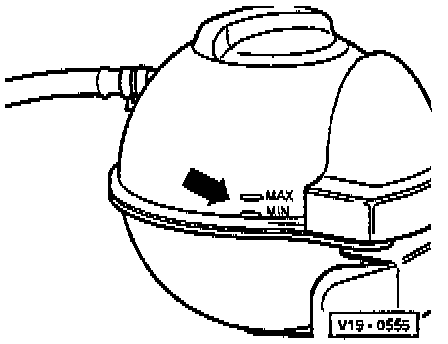

Cooling System: Service and Repair
DRAINING1. Remove cap from coolant expansion tank
2. Remove drain screw from coolant line.
FILLING
NOTE:
- The cooling system is filled year-round with a mixture of water, anti-freeze and agent G 11 for corrosion protection.
- G11 and coolant additives marked as: "in accordance with TL VW 774 B" prevent frost and corrosion damage, the formation of chalk and in addition, they raise the boiling point of the coolant.
- For these reasons, the cooling system must be filled year-round with an anti-freeze/water mixture and a corrosion protection agent.
- Due to its higher than water boiling point, the coolant mixture aids operational efficiency when the engine operates at high loads, particularly in tropical climates.
- If the Engine Coolant radiator, Charge Air Cooler, cylinder head or cylinder head gasket are replaced, completely replace the Engine Coolant. Do not re-use old coolant
RECOMMENDED MIXTURE RATIOS
^ Freezing protection down to: -25°C (-13°F)
- Anti-freeze amounts:
40 % - 3.5 liters (3.7 US qts.).
- Water amounts:
60 % - 6.5 liters (6.9 US qts.).
^ Freezing protection down to: -35°C (-31°F)
- Anti-freeze amounts:
50 % - 5.0 liters (5.3 US qts.).
- Water amounts:
50 % - 5.0 liters (5.3 US qts.).
NOTE:
- The amount of anti-freeze must not exceed 60 %; freeze protection and cooling efficiency will decrease if the anti-freeze percentage is too high.
- The quantity of system coolant can vary depending upon vehicle equipment.
PROCEDURE
1. Press down on the top of the radiator hose.

2. Slowly fill with coolant up to the max. mark on the expansion tank (filling time approx. 5 minutes).
3. Start engine and run at approx. 1500 rpm for 2 minutes max. and at the same time fill with coolant up to the over-flow hole on the expansion tank.
4. Fit expansion tank cap.
5. Run engine until radiator fan cuts-in.
6. Check Engine Coolant level and top-up if necessary. When the engine is at normal operating temperature, the coolant level must be on the max. mark, when the engine is cold, between the min. and max. marks.